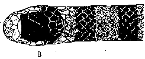
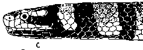

|
Digitized Inventory of Animal Resources: Reptilia ( Snakes ) Principal Investigator: Dr. R. J. B Alfred, Co-Investigator: Dr. Rama Krishna, Contributed by:
Dr. R.C.Sharma |
Laticauda colubrina (Schneider 1799)
Taxonomic
Details
----- Scientific Name
----- Classification
----- Synonyms
----- Common Names
Other
Biological Details
----- Habit and
Habitat
----- Distribution
---------- Extent of
Occurrence
---------- Area of occurrence
---------- Altitude
---------- Population
-----
Conservation Status
-----
Diagnostic
Features
-----
Breeding system
Miscellaneous
Information
Literature
sea snakes
Family hydrophiidae Boie 1827.
This family includes the snakes which lead a marine life either living quite near the shore in coastal water and go quite away in off-shore waters for food capture or lead a perfect semi pelagic life, depending completely on the sea. Most of the species are viviparous, deadly poisonous and piscivorous in food habits. The main characters of sea snakes are : Body scales are small. rhomboidal and overlap; except in few species head is small and not distinct from the neck; the body, including the tail is compressed; eyes are quite small; cranial characters are quite similar to the family Elapidae, as a matter of fact Hydrophiidae is the Elapidae, which has migrated to the sea and has adopted for the marine way of life, one species of Hydrophiidae has gone to lake in Philippines. Teeth are present on maxilla, dentary, palatine and pterygoid bones; maxilla and dentary bones are quite shortened in marine snakes and bear recurved pointed teeth; the anterior most maxillary tooth is a large, erect fang which is grooved and is connected with the poison gland and exhibits proteroglyphus condition; mandibles are devoid of a coronoid bone; maxilla forms a most flexible connection with the ectopterygoid, which had got its posterior extension above the pterygoid; the pterygoid bone in most species reaches to the quadrate; the skeletal elements in the anterior region of skull are united flexibly, thus rendering a most flexible movement of bones in the cranium, the premaxilla is not united with the maxilla and prefrontal is separated from the nasal; supratemporal is freely movable and provides a lever like mechanism in the cranium and the quadrate is quite long and slanting backward, thus providing an increased gape to the jaws in this family members, the vestiges of the pelvis or hind limbs are not present. The family is widely distributed in Indian and Pacific ocean as follows: from complete eastern coast of Africa to the half western cost of South America through Madagascar, complete sea around North coast of Australia and New Zealand, coasts of India, Malaysia, Indonesia, New Guinea, in north up to southern Japan, islands of Oceania as far east as the Samoan Islands, species like Pelamis platurus has surpassed this limit and has crossed the Pacific ocean and has reached to the western coast of tropical America, and the Indian ocean to the eastern coast of Africa. Sea snakes have not been found in the seas around Maldive and Laccadive Islands. Most of the members of this family are most agile and fine swimmers but they become
Genus . Laticauda Laurenti 1768
Maxillary bone much shorter than the ectopterygoid, extending forwards beyond the palatine. Poison fangs followed after an interval by 1 or 2 teeth. Body subcylindrical, of equal diameter throughout. Head shields large, entire. Nostrils lateral. Internasals present, completely separating the nasals from each other. Scales imbricate and smooth throughout, in 19-25 rows. Ventrals large, at least half as broad as the body.
Only two species are found in the Indian subcontinent, both of which range from the Bay of Bengal and the seas south of Japan to the coast of Australia and islands of Oceania.
Key to the species of the Genus Laticauda.
1. Prefrontals are separated from each other by a median shield; scales in 21-25 rows, throughout colubrina.
2. Prefrontals in contact with each other mesially; scales in 19 rows throughout laticaudata.
Scientific Name : Laticauda colubrina (Schneider 1799)
Family :
Hydrophiidae
Classification: Genus . Laticauda Laurenti 1768
Synonyms:
Common Names:
Distribution:
Altitude:
Conservation status: Very rare in Indian Ocean.
Length : Total length in males 875 mm., tail 130 mm., and in females 1420 mm., tail 145 mm.
Body : Hemipenis is forked near the tip; the complete organ bears spines, which are short, thick and closely set in the distal half; spines are longer and fewer in number in the proximal half.
Scales : Scales in 21 to 23 (rarely 25) rows. Ventrals 213-245. Subcaudals : Male 37-47; female 29-35. Anal divided.
Colouration : The dorsal color is light or dark bluish gray above, yellowish below, with black bands, Snout is yellow, the colour extending backwards on each side of the head above the eye and along the upper lip, leaving a dark bar in between. Rest of the head black.
Breeding Biology :
 
B. Dorsal pattern of head and body, Laticauda
colubrina (Schneider) C. Lateral pattern of head and body, Laticauda
colubrina (Schneider)